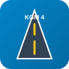

Resume & Professional Experience
Summary of field and office internships, organizations worked with, and technical competencies in Geomatics Engineering.
Internship Organizations & Companies (Turkey & Ankara) OpenLayers Map
Geographic locations of public institutions and private engineering firms where internships were completed.
Marked Organizations: General Directorate of Highways (4th Regional Directorate), Küre Engineering, Doruk Surveying.
Technical Map Implementation (GMT 458):
• Issue 1 (Zoom Threshold): Küre Engineering and Doruk Surveying are located in close proximity (~160 m). To eliminate visual overlap at country scale, a single cluster marker is displayed; individual markers are revealed only when zooming in (Zoom ≥ 11).
• Issue 2 (Earth Repeating): Repetition of base map tiles horizontally when zoomed out is prevented using the
• Issue 1 (Zoom Threshold): Küre Engineering and Doruk Surveying are located in close proximity (~160 m). To eliminate visual overlap at country scale, a single cluster marker is displayed; individual markers are revealed only when zooming in (Zoom ≥ 11).
• Issue 2 (Earth Repeating): Repetition of base map tiles horizontally when zoomed out is prevented using the
wrapX: false parameter and view extent boundary.
Internship & Professional Experiences
| Organization / Firm | Role & Field | Duration | Tools & Technologies Used |
|---|---|---|---|
|

General Directorate of Highways (4th Regional Directorate)
Public Authority • Surveying, Highway GIS & Expropriation |
Geomatics & GIS Intern | July - August 2024 | Netcad QGIS GNSS RTK |
|
Küre Engineering
Private Firm • Zoning Plans & Infrastructure Mapping |
Spatial Data Intern | August - September 2025 | ArcGIS Pro AutoCAD PostGIS |
|
Doruk Surveying & Engineering
Private Firm • Engineering Surveys & Staking |
Field & Geomatics Intern | June - July 2025 | Total Station Leaflet Python |
Technical Skills & Competencies
- Web Mapping & Frontend: Leaflet, OpenLayers, HTML5, CSS3, JavaScript (ES6+), GeoJSON, OGC Web Services (WMS/WFS/WMTS).
- Desktop GIS & CAD: QGIS, ArcGIS Pro, Netcad, AutoCAD Civil 3D.
- Spatial Databases & Analytics: PostgreSQL, PostGIS, Python (GeoPandas, Shapely), Spatial SQL queries.
- Geodesy & Photogrammetry: GNSS RTK positioning, leveling, Agisoft Metashape UAV image processing, Digital Elevation Models (DEM).